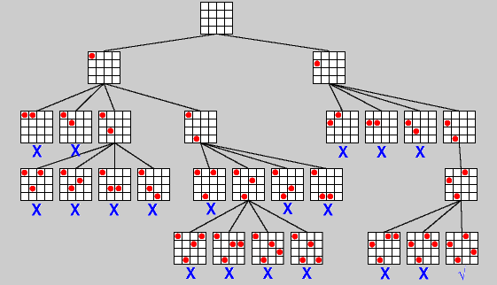
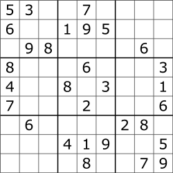
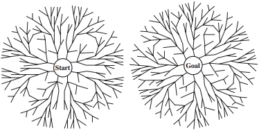
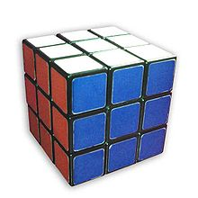

Search techniqies This page briefly describes various search techniques. In some problems we search an implicit graph, where we don't store the entire graph, but we generate each vertex's neighbors as we do the search.
Backtracking

4 queens search tree. Pruned subtrees are labeled with X.
Source: ivoroshilin.wordpress.com
Backtracking example: n queens
The goal of n queens is to place n queens on an nxn chessboard such that no two queens are in the same row, column, or diagonal. We know that any solution will have exactly one queen in each column. On the ith level of the search tree, we try to place a queen on each square of the ith column.
Backtracking example: Sudoku

Sudoku. Source: wikipedia.org
The goal of Sudoku is to fill a 9x9 grid with numbers from 1-9 such that no number occurs twice in the same row, column, or box. On the ith level of the search tree, we try to fill the ith square. Note that we can fill squares in any order. A common strategy is to start in the squares with the fewest number of possible candidates. This speeds up backtracking by reducing the size of the search tree.
Depth-first vs breadth-first
Backtracking uses depth-first search because it uses less space than a breadth-first search of the same depth. In depth-first search, you only need to store the path from the start to the current node.
However, if the maximum depth of the search tree is larger than the solution depth, depth-first search may do much more searching than necessary. For example, suppose you want to find a path from the Science Building to Razran Hall. Depth-first search might explore every road in the United States before it finds Razran Hall. If the maximum depth is infinite, it may never find the solution. Breadth-first search will find the solution faster.
Iterative deepening depth-first search
We can fix this problem by running depth-first search with a limited depth. This allows us to find the solution quickly while using less space than breadth-first search. In iterative deepening depth-first search, we begin with a depth-0 search, then depth-1, then depth-2, etc, until we find the solution.Although it may seem wasteful to do the same work multiple times, it does not hurt the runtime very much.
Suppose that b is the branching factor (the maximum number of outgoing edges), and d is the depth of the shallowest solution.
The total runtime of all the searches is the sum of a geometric series: O(b1) + O(b2) + ... + O(bd) = O(bd).
Breadth-first search has the same runtime (within a constant factor).

Bidirectional search.
Source: Artificial Intelligence: A Modern Approach p. 91
Bidirectional search
Suppose we want to find a path from vertex s to vertex t, in a graph with branching factor b and solution depth d. If we use breadth-first search, the runtime is O(bd). In bidirectional search we run two simultaneous searches: a forward search from the source and a backward search from the destination, until they meet in the middle. In other words, we search until one search reaches a vertex that the other search already visited. We can use a hash table to detect this. The depth of each search is d/2, so the runtime is O(2bd/2) = O(bd/2) (assuming the branching factor is b in both directions).Bidirectional search is not be useful for problems like n queens and sudoku where we do not know the solution.

Rubik's Cube
Source: wikipedia.org
Bidirectional search example: Rubik's Cube
In the Rubik's Cube puzzle, the goal is to turn the faces of a scrambled cube to return it to its original state. Every configuration can be solved in 20 turns or less. Finding the shortest solution is a shortest path problem, where vertices are cube positions and edges are turns. Searching the entire graph would take way too long. Instead, we can do a depth-10 search from each end. Each depth-10 search explores about 250 billion positions (the entire graph contains 43 quintillion positions, so this is a big improvement).
A* search
A* search is a best-first search algorithm for finding the path with the minimum total cost. Nodes are evaluated by adding g(n) + h(n), where g(n) is the cost to reach the node, and h(n) is a heuristic function that estimates the cost to reach the goal. Instead of exploring minimum-distance nodes first, as in Dijkstra's algorithm, we explore best-evaluation nodes first. If we want to find the optimal path, h(n) should never overestimate the cost.A* search example: road map
Suppose we want to find the shortest walking path from one intersection to another. We can use the straight-line distance to the goal as the heuristic function. In other words, roads that bring us closer to the goal are more likely to be explored earlier.
A* search example: Super Mario World
In most levels, the goal is to move to the right, so the heuristic function can be based on how far right Mario is (farther right = closer to goal). In this video, an AI uses A* search to play through previously-unseen levels as fast as possible. The red lines are the paths that the AI is considering.